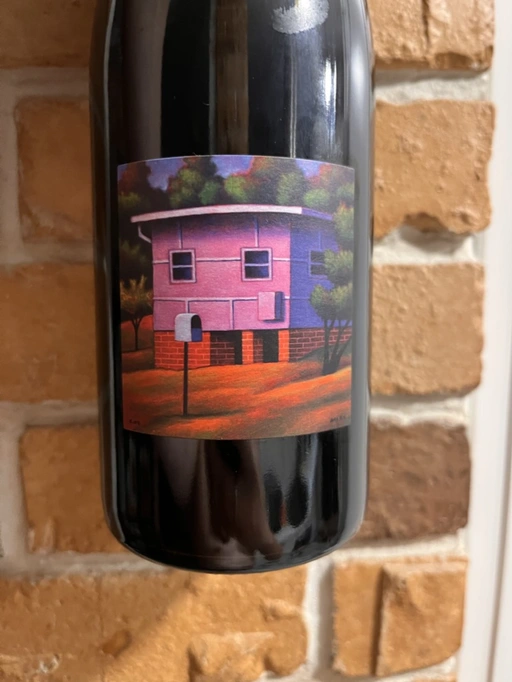

- Type
- Red Still, Dry
- Producer
- William Downie
- Vintage
- 2020
- Location
- Australia, Gippsland
- Grapes
- Pinot Noir
- Alcohol
- 13
- Sugar
- 0.4
- Price
- 1092 UAH
- Cellar
- N/A
Ratings
2022-11-02 - 7.00
My father used to quarrel every time he found brânză de oaie in our fridge because it smelt like old socks to him. And this is the same person who loves guelder rose berries, which I associate with old socks. In this regard, Cathedral is a remarkable wine because it makes me think of my parents and this constant argument.
Guelder rose berries aroma dominates here. It even brought its best friends - old socks soaked in horse sweat. I know, it sounds lovely, but this is Cathedral in its full glory. Brightness and craziness flow to the taste. Slightly fizzy by nature™, elevated and full of itself like a 14 years old teenager. It lacks balance, but it’s fun. Besides, I always defend my cheese.